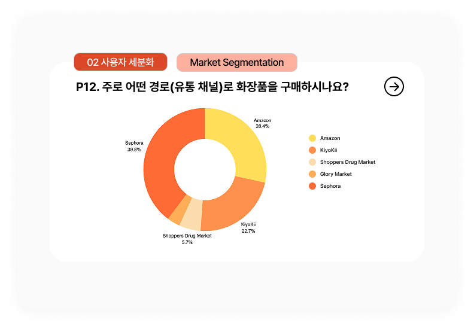
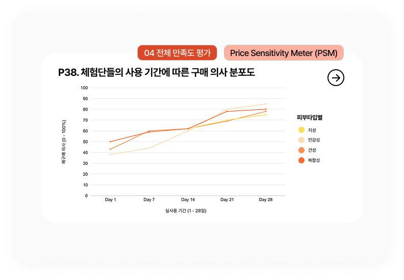
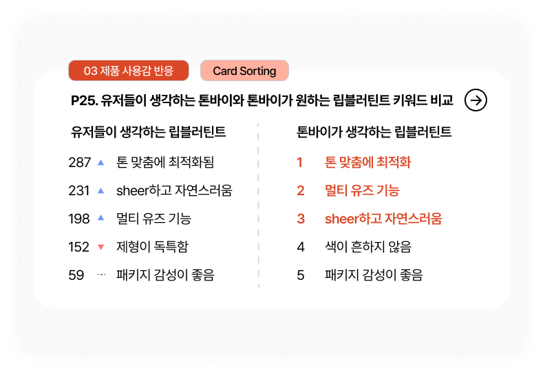
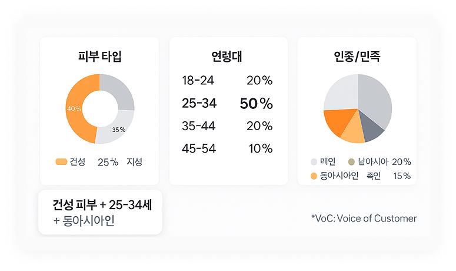
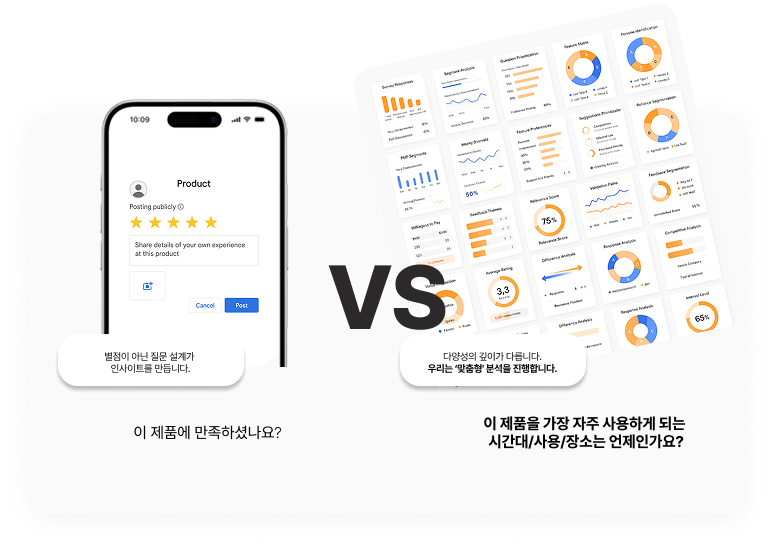
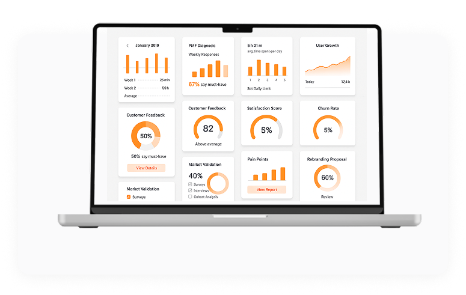

PMF 찾는 데 1년? 이제 그럴 필요 없습니다
2개월
에필로그의 평균 PMF 검증 기간
기존 대비 절반 이하의 비용
80% ↓
기존 대비 절감 비용
'감'에 의존하지 않는, 현지 유저 기반
인사이트 + 정량 리포트 제공
인사이트 + 정량 리포트 제공
데이터 중심 실행
'감'에 의존하지 않는, 현지 유저 기반
인사이트 + 정량 리포트 제공
진짜 반응, 진짜 데이터
응답만이 아닌, 행동을 추적합니다.
누가, 언제, 어떤 맥락에서 반응했는지를 시각화된 행동 데이터로 설명합니다.

구매 채널별
선호도를 분석해요
소비자가 주로 구매하는 경로를 파악해
유통 전략의 우선순위를 세울 수 있어요.

사용 기간에 따른
구매 의사를 살펴봐요
언제, 어떤 조건에서 전환이 일어나는지
행동 기반 데이터로 확인할 수 있어요

브랜드와 소비자의
인식 차이를 비교해요
유저가 실제로 인지한 키워드를 수집해
마케팅 메시지를 더 정확하게 조정해요
"좋다" 그 이상의 이유를 찾아드립니다
300명+ 현지 유저가 직접 체험하고 말한 생생한 한마디들,
그리고 그 속에 숨겨진 문화적 맥락과 감정선까지 풀어낸 분석.

출장 없이도 다양한 *VoC
도출할 수 있어요
당신이 알고 싶은 소비자
직접 대신 만나드립니다

리뷰가 아닌 구조화된 질문이
차이를 만듭니다.
무엇을 좋아하고나,
어떤 점을 꺼려 하는지 이유까지 나타냅니다.
"우리가 가는 방향이 맞을까?"
직접 판단해드립니다
PMF 진단부터 런칭까지 제품별,
데이터 기반으로 다음 '스탭'을 제시합니다.

숫자가 아니라,
방향을 보여주는 대시보드
PMF 진단, 리브랜딩, 글로벌 확장까지
데이터가 말해주는 다음단계의 우선순위를
제시합니다.